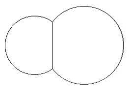
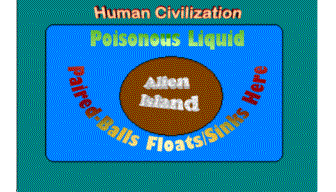

Input: standard input
Output: standard output
Time Limit: 2 seconds
Have
you watched the science fiction movie “Sphere”? In this movie there is an
sphere from outer space which enables a man to convert his night-mares into
reality. That is if you dream that you are being attacked by lion, in reality
your surrounding people will be attacked by lion. The problem is that the alien
people who sent the “Sphere” are now in earth. They have made an artificial
island to stay which is surrounded by unknown poisonous liquid. The scientists
of earth have failed to determine the chemical structure of this liquid but has
succeeded to determine one of its physical properties, the specific gravity (S.
G.). This S. G. of liquid changes with time. So our scientists measure the S.
G. every hour. The aliens don’t attack us. What they do is very simple, they
just release paired-spheres on the poisonous stream of liquid and these paired
spheres float towards human civilization and then materializes our night mares.
As these are paired spheres their destructive power is twice of the previous
sphere. The aliens are not good in physics and maths. So some of the paired
spheres created by them sinks in the poisonous liquid. As our scientists are
very good in physics we can determine the weight of the spheres but sadly they
are very week in mathematics. So they ask your help to determine the volume and
surface area of the paired sphere and also asks you to determine whether it
will float in the liquid or sink. You can be sure that the input values and
output specification will be such that you will not have to think about
precisions in case of sink and float. Consider pi=2*acos(0);
|  |  |
|
Fig: A Paired Sphere (Though the
image looks like two circles actually they are two balls) |
Fig: A diagram of the given scenario |
“When you want to store a value in the range of 32 bit integer in a 16 bit integer variable,
it is very unlikely that the value will be stored properly and in many cases the
stored value will be negative. Similarly, if you expect that a blunt man
will evaluate your intelligence properly, you
are simply expecting too much.”